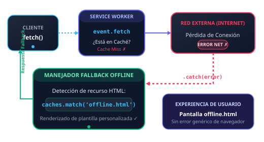

Interceptor de Peticiones & Plantilla "Modo Sin Conexión"
Esta solución implementa la detección de pérdida de conexión a Internet en el evento fetch del Service Worker. Cuando la red falla y el recurso solicitado no existe en la memoria caché, el interceptor previene pantallas de error del navegador despachando automáticamente una plantilla HTML personalizada de contingencia (offline.html).

Pilares de la Detección y Respuesta Fallback
1. Precacheo de la Plantilla
En el evento install, se almacena en memoria caché la plantilla offline.html y sus gráficos vectoriales, asegurando su disponibilidad total sin red.
cache.add('./offline.html')
2. Intercepción en fetch
Se interceptan las peticiones GET. Primero se consulta la Cache API con caches.match(); de no encontrarse, se intenta acudir a la red externa con fetch().
caches.match(req).then(...)
3. Detección en .catch()
Si el usuario está offline o la red colapsa, la promesa de fetch() es rechazada. El bloque .catch() detecta la pérdida de conectividad en tiempo de ejecución.
fetch(req).catch(networkError =>)
4. Renderizado de Contingencia
Si la solicitud corresponde a navegación o HTML, el interceptor despacha inmediatamente la plantilla offline.html precargada, preservando la UX del usuario.
return caches.match('offline.html')
Banco de Pruebas Interactivo de Contingencia
Prueba en vivo cómo responde el Service Worker cuando se solicitan recursos no cacheados estando en modo online o simulando la pérdida de red.
Plantilla HTML "Modo Sin Conexión"
Solicita una página HTML inexistente en caché (./pagina-no-cacheada.html). Si no hay red, el Service Worker intercepta el fallo y devuelve la plantilla personalizada offline.html.
Fallback Gráfico para Imágenes
Intenta cargar una imagen remota o no guardada (foto-desconocida.png). Cuando la red falla, el interceptor despacha un vector SVG de sustitución visual.
Fallback JSON para Datos
Si una llamada fetch a un endpoint de datos (/api/datos) falla por desconexión, el Service Worker retorna una respuesta JSON estructurada de contingencia.
¿Cómo probar el Modo Offline en DevTools?
1. Presiona F12 o clic derecho → Inspeccionar.
2. Ve a la pestaña Red (Network).
3. En el selector de velocidad (normalmente dice Sin limitación / No throttling), selecciona Sin conexión (Offline).
4. Haz clic en "Ejecutar Fetch a HTML no en caché" o navega a cualquier página no precargada: ¡verás cómo el Service Worker intercepta la solicitud y renderiza la plantilla personalizada offline.html!
Inspector de Recursos Precacheados (Cache API)
Verifica los recursos esenciales del App Shell y la presencia activa de la plantilla offline.html.
| Recurso | Clasificación | Estado en Cache API | Acción |
|---|---|---|---|
| Verificando memoria caché... | |||